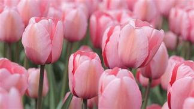

TULIPÁNY
Hovorí sa že Holandsko je krajina tulipánov, a niečo na tom bude. Veď práve v tejto krajine, keď sem turisti zavítajú, sa očakávajú lány tulipánov, a okrem veterných mlynov, ružovej uličky a zeleného „čajíku“ sú ľudia zvedaví aj na kvety. Kvetinové výstavy a ceremónie preslavujú Holandsko ešte ďalej.
Tulipán – latinský názov Tulipa – je rozsiahly rod jednodeložnej rastliny, zadeľujúci sa do čeľade ľaliovitých rastlín, aj keď by ste to z prvu nehádali. Existuje niečo cez 150 druhov tulipánov a mnohé v našich obchodoch a predajoch ani nenájdete. Vyrastajú z cibuľky, tá je ukrytá pod zemou. Je to vytrvalá rastlina s jednoduchými dlhými listami, rovného typu s rovnomernou žilnatosťou, zužujúce svoj tvar ku koncu od vyrastajúceho dna listu.
Rastlina listov veľmi nemá, dva až tri si drží při svojej hlavnej stonke, z ktorej vychádza farebný kvet ukrývajúci rozmnožovacie a peľové ústrojenstvo pod lupienkami. Kvety samotné sú celkom veľké, výrazné a práve pre túto výraznosť, mohutnosť ale aj krásu sú tak obľúbené.
Lupienkou je okolo 6 v dvoch radoch.
Vnútri sa ukrývajú tyčinky v dvoch radoch a je ich taktiež 6.
Gyneceum má 3 plodolisty, semeník vonkajší. Kvet má i malý plod.
Ten však nemá v bežnom záhradkárstve využitie.
Tulipány sa rozmnožujú skrz už spomínané cibuľky.
Hlavná cibuľka počas roka rozpína svoj tvar, a oddeľuje od seba menšie cibuľky, ktoré rastú s hlavnou, avšak poslúžia na budúci rok mladému kvetu.
Celá rastlina má jeden kvet na jednu stonku.
Z jednej cibuľky zriedkakedy vyrastú aj dva kvety.
